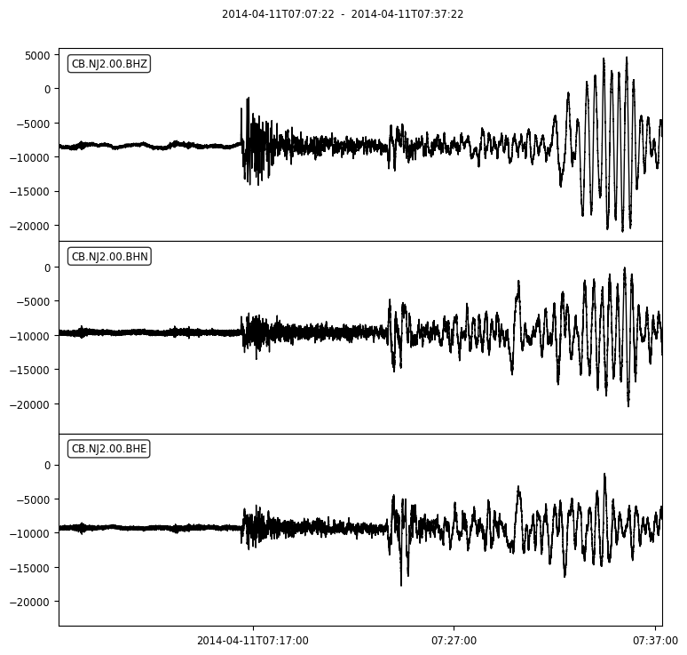
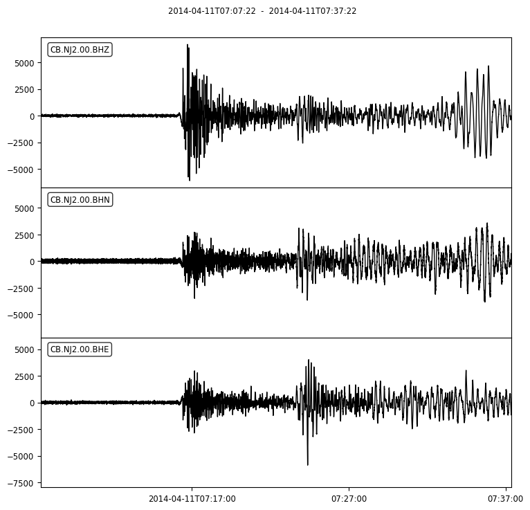
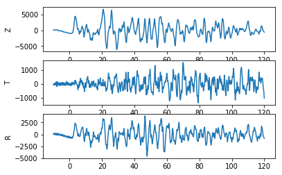
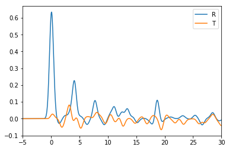

Calculate a P-wave Receiver Function (PRF)¶
0. Download SAC files for this example¶
Download and unzip this .tar.gz file, which include SAC files of three components.
1. Import corresponding modules¶
import obspy
import seispy
import numpy as np
import matplotlib.pyplot as plt
2. Read SAC files with 3 components (ENZ)¶
You should perpare teleseismic data if SAC format (ENZ) and read them via obspy. To facilitate the follow-up, you’d better write positions of the station and the event into SAC header (i.e., stla, stlo, evla, evlo and evdp).
st = obspy.read('tele/*.101.*.SAC')
3. Pre-process for raw data¶
You should remove the mean offset and linear trend of the waveforms, then filtered them with a Butterworth bandpass filter in the range of 0.05–2 Hz. The figures show a comparison between the raw data and the data after pre-process
st_cmp = st.copy()
st.detrend()
st.filter("bandpass", freqmin=0.05, freqmax=2.0, zerophase=True)
# Plot for comparesion
st_cmp.plot()
st.plot()


4. Calculate the epicenter distance and back-azimuth¶
To trim the waveform or rotate the components, you can use the seispy.distaz to calculate the epicenter distance and back-azimuth.
da = seispy.distaz(st[0].stats.sac.stla, st[0].stats.sac.stlo, st[0].stats.sac.evla, st[0].stats.sac.evlo)
dis = da.delta
bazi = da.baz
ev_dep = st[0].stats.sac.evdp
print('Distance = %5.2f˚' % dis)
print('back-azimuth = %5.2f˚' % bazi)
Distance = 51.64˚
back-azimuth = 131.59˚
5. Rotation¶
Now you can rotate horizontal components (ENZ) into radial and transverse components (TRZ)
st_TRZ = st.copy().rotate('NE->RT', back_azimuth=bazi)
6. Estimating P arrival time and ray parameter with obspy.taup¶
from obspy.taup import TauPyModel
model = TauPyModel(model='iasp91')
arrivals = model.get_travel_times(ev_dep, dis, phase_list=['P'])
rayp = model.get_ray_paths(ev_dep, dis, phase_list=['P'])
P_arr = arrivals[0]
P_ray = rayp[0]
7.Trim the waveforms for PRF¶
Then you cut 130 s long waveforms around P arrival time (from 10 s before to 120 s after theoretical P arrival times).
dt = st[0].stats.delta
shift = 10
time_after = 120
cut_pos_begin = int((P_arr.time - st[0].stats.sac.o - shift) / dt)
cut_pos_end = int((P_arr.time - st[0].stats.sac.o + time_after) / dt)
T = st_TRZ[0].data[cut_pos_begin:cut_pos_end+1]
R = st_TRZ[1].data[cut_pos_begin:cut_pos_end+1]
Z = st_TRZ[2].data[cut_pos_begin:cut_pos_end+1]
time_axis = np.linspace(-shift, time_after, T.shape[0])
ax1 = plt.subplot(3,1,1)
ax1.plot(time_axis, Z)
ax1.set_ylabel('Z')
ax2 = plt.subplot(3,1,2)
ax2.plot(time_axis, T)
ax2.set_ylabel('T')
ax3 = plt.subplot(3,1,3)
ax3.plot(time_axis, R)
ax3.set_ylabel('R')

8. Calculate PRF¶
seispy.decov.decovit provide a function with an iterative time-domain deconvolution method. Now let’s Calculate a PRF. In this example we assume:
- Gauss factor = 2.0
- The maximum number of iterations = 400
- Minimum error = 0.001
f0 = 2.0
tmax = 400
minderr = 0.001
PRF_R, RMS, it = seispy.decov.decovit(R, Z, dt, R.shape[0], shift, f0, tmax, minderr)
PRF_T, RMS, it = seispy.decov.decovit(T, Z, dt, T.shape[0], shift, f0, tmax, minderr)
plt.plot(time_axis, PRF_R)
plt.plot(time_axis, PRF_T)
plt.xlim([-5, 30])
plt.legend(['R', 'T'])

The figure shows PRFs in R and T components.